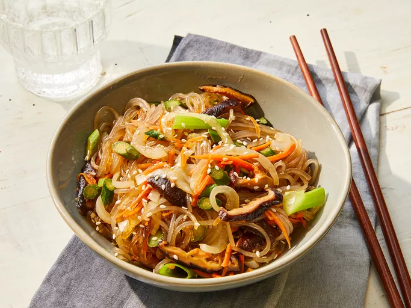
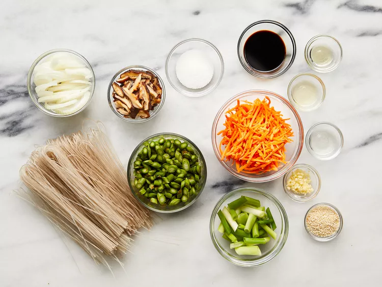
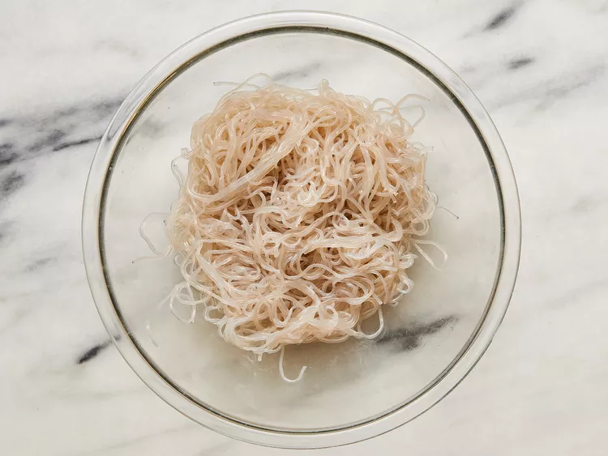
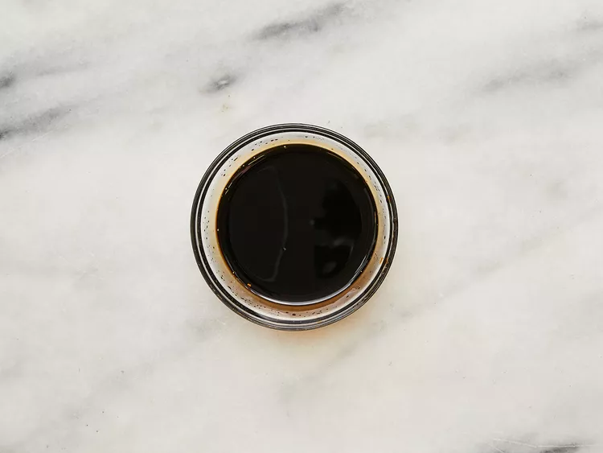
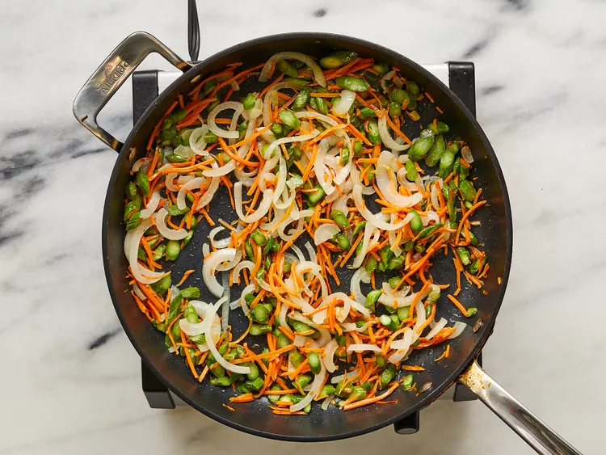
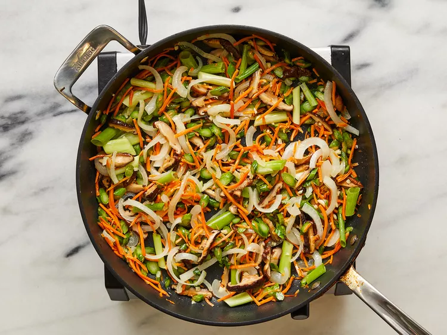
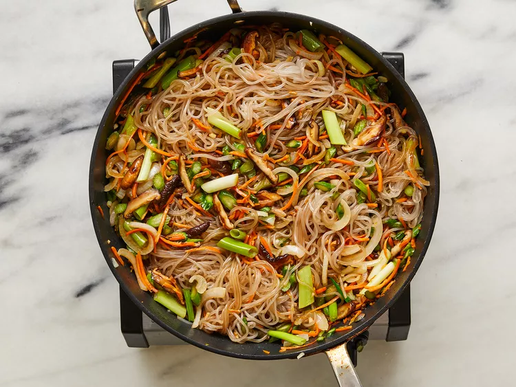
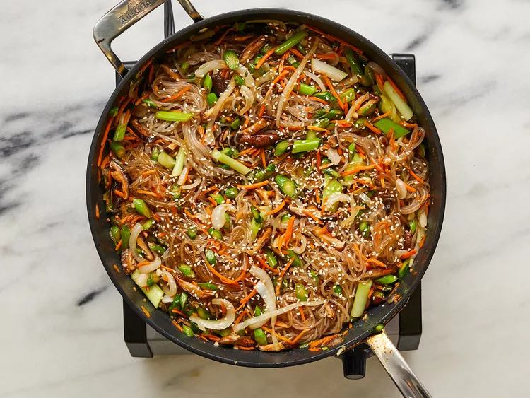

Home
Japchae Korean Glass Noodles
Japchae is a traditional Korean stir-fry dish made with sweet potato glass noodles, vegetables, and often beef or mushrooms.
Seasoning it with soy sauce and sesame oil gives it a savory-sweet flavor.

Photos by Dotdash Meredith Food Studios
Ingredients
- ½ pound Korean dang myun noodles
- 2 ½ teaspoons sesame oil, divided
- 2 tablespoons soy sauce
- 2 teaspoons white sugar
- 1 tablespoon vegetable oil
- 2 carrots, cut into match-stick size pieces
- ½ pound asparagus, thinly sliced
- ¾ cup thinly sliced onions
- 2 cloves garlic, minced
- 3 green onions cut into 1-inch pieces
- ½ cup dried shiitake mushrooms, soaked until soft, then sliced into strips
- 1 tablespoon sesame seeds
Directions
- Gather the ingredients.

- Fill a large pot with lightly salted water and bring to a rolling boil. Cook noodles in boiling water, stirring occasionally, until tender yet firm to the bite, 4 to 5 minutes. Drain, then rinse with cold water. Toss noodles with 1 teaspoon sesame oil; set aside.

- Whisk together soy sauce and sugar in a small bowl; set aside.

- Heat vegetable oil in a skillet over medium-high heat. Cook and stir carrots, asparagus, onions, and garlic in hot oil until softened, about 5 minutes.

- Stir in green onions and mushrooms; continue cooking and stirring for 30 seconds.

- Pour in soy sauce mixture, then add noodles. Cook and stir until noodles are warmed through, 2 to 3 minutes.

- Remove from heat and toss with sesame seeds and remaining 1 1/2 teaspoons sesame oil.
